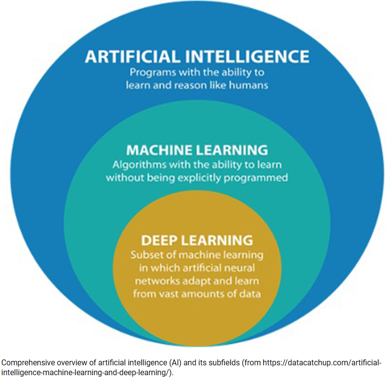
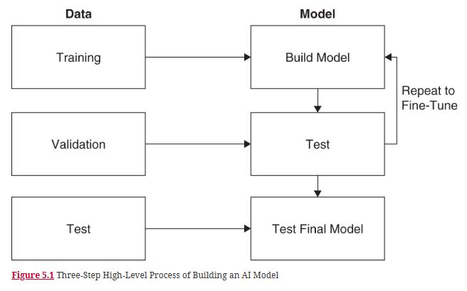
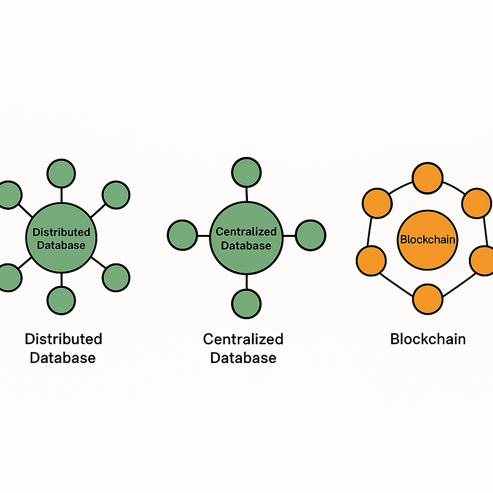

Survey of Emerging Technology
Instructor: Chris Fulton
Agenda + Learning Objectives
- AI Overview
- AI
- Web3
- Quantum Computing
Emerging AI Technology
AI Overview
AI has been around for quit some time.
Training a Model
High‐level process for building AI models
Deep Learning Neural Network
Inspired by how the human brain works, using layers of artificial neurons to process information

Video on How Large Language Models Work
Web3
Web3 Technologies
General Blockchain Technology
Decentralized Storage
Metaverse & Virtual World Platforms
Decentralized Finance (DeFi) Protocols
Cryptocurrencies
Smart Contracts
NFT's
Decentralized Autonomous Organizations (DAOs)
Decentralized Web Browsers & Networks
What makes blockchain databases different?
Is Web3 a Scam? Is Web3 dead?
Quantum Computing
Why is Quantum Computing Powerful?
Quantum computers are not just faster — they can solve certain types of problems that classical computers would take thousands of years to solve.
A few examples:
- Factoring large numbers (important for cryptography)
- Simulating molecular and chemical reactions (useful in drug discovery).
- Optimizing complex systems (logistics, finance, machine learning).
Learning Activity
Select from one of the technologies listed below and conduct light research using LLM, Gartner and Search to learn more the technology.
Select from one of the following
AI - Agentic AI
Web3 - Smart Contracts
Quantum Computing
Edge Computing
Take Notes + Lead Discussion addressing questions below:
What are some of the leading companies working with this technology?
What are some of the current hot topics involving the technology?
What risk are associated with this technology?